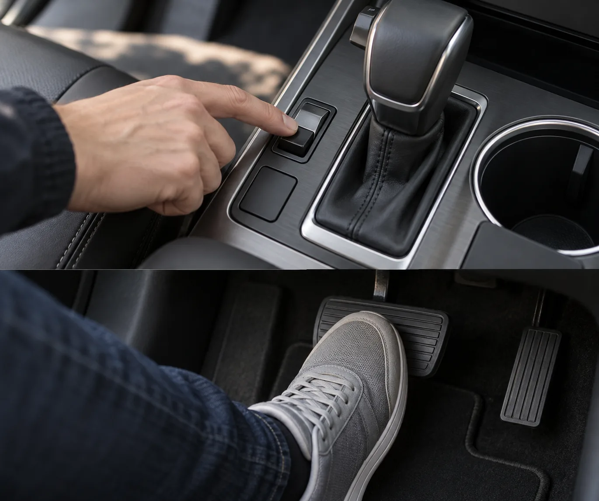
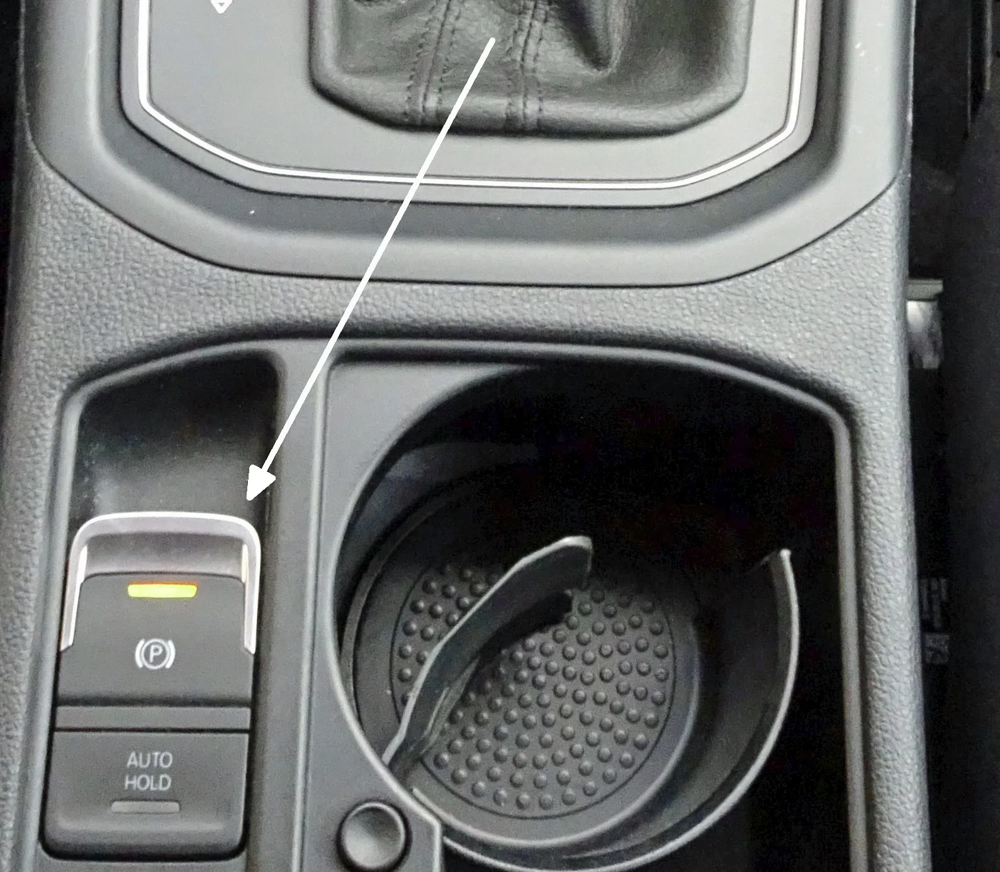
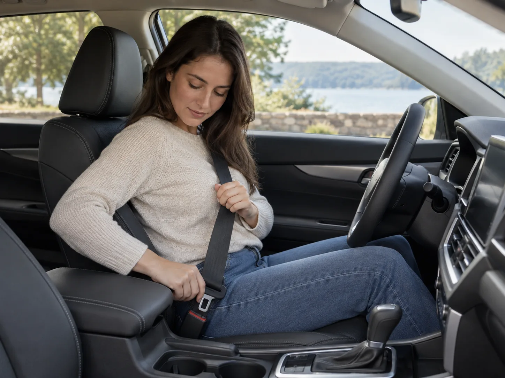
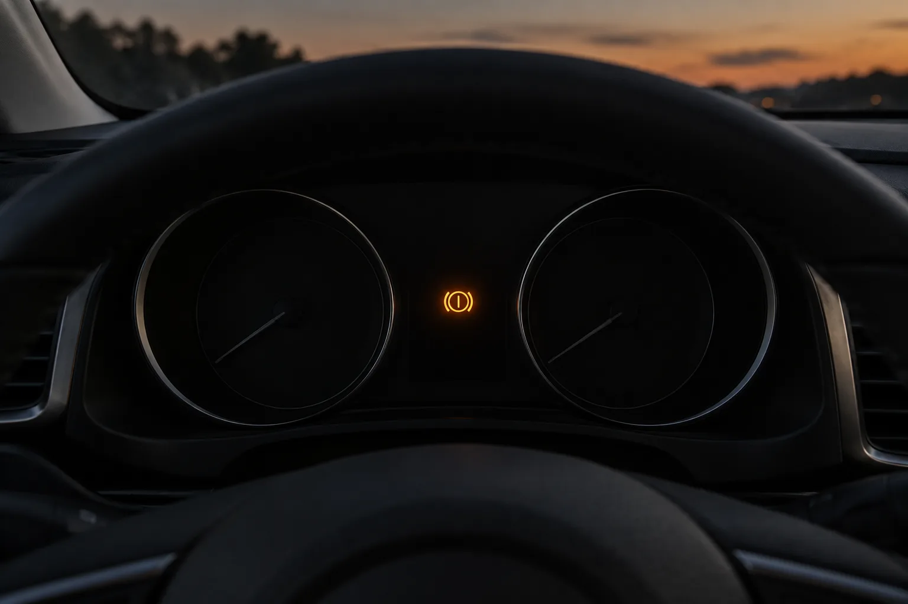
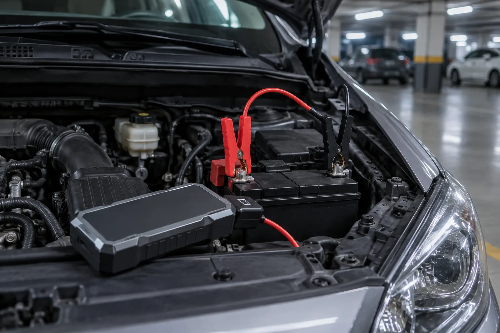
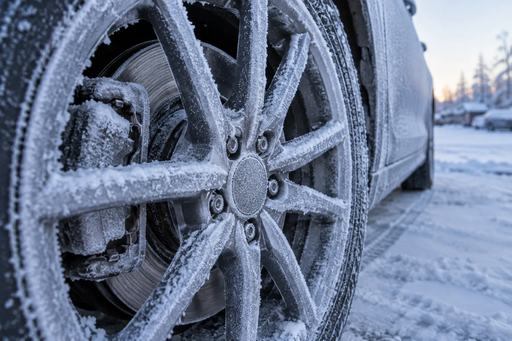
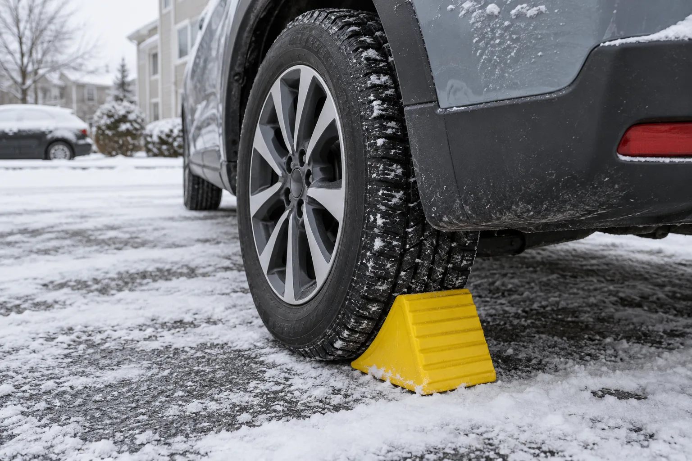
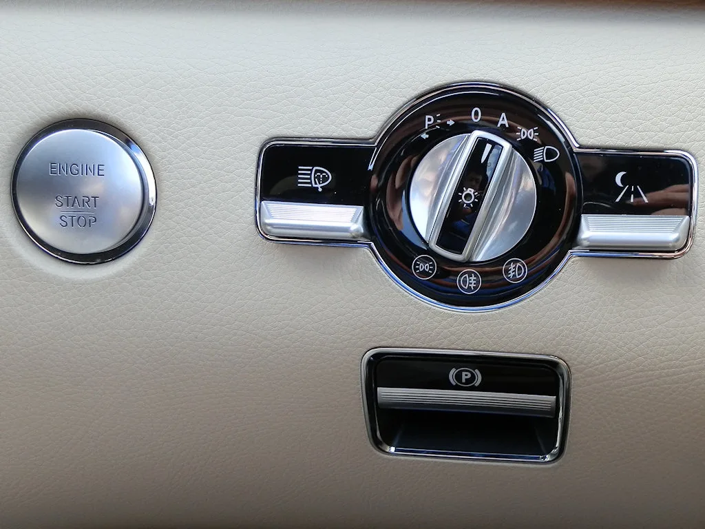
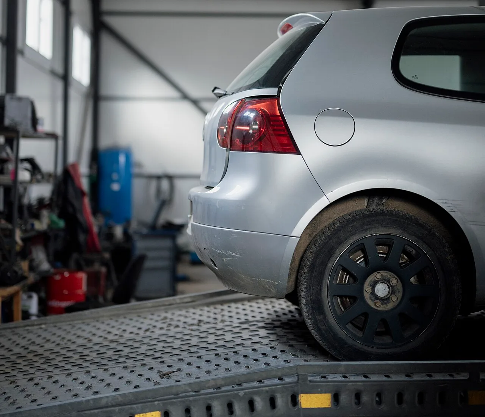

▲ 브레이크 페달을 밟은 채 센터콘솔의 주차브레이크 스위치를 누르는 모습 이미지=AI 생성
출근하려고 시동을 걸고 기어를 D에 넣었는데 계기판의 주차 브레이크 표시가 꺼지지 않고, 가속 페달을 밟아도 차가 묵직하게 버틴다면 일단 발을 떼자. 전자식 주차브레이크(EPB)가 안 풀리는 상황의 상당수는 고장이 아니라 해제 조건을 하나 빠뜨렸거나, 배터리 전압이 모자라거나, 겨울철 결빙 때문이다. 제조사 취급설명서에 적힌 조건부터 차례로 확인하면 대부분 그 자리에서 풀린다. 언덕에서 주차브레이크와 풋브레이크를 어떻게 나눠 쓰는지는 별도 기사에 정리했고, 이 글은 '안 풀릴 때'만 다룬다.
1. 지금 바로 해볼 것: 순서대로 따라 하기
EPB는 '브레이크를 밟은 상태에서 스위치를 누른다'가 기본 해제 동작이다. 현대차 2025년형 투싼 취급설명서는 "시동을 거십시오. 브레이크 페달을 밟은 상태에서 전자식 파킹 브레이크 스위치를 누르십시오"라고 안내하고, 해제되면 계기판의 브레이크 경고등이 꺼진다고 적는다. 스위치를 아무리 눌러도 안 풀린다면 아래 순서대로 확인하자.
- 브레이크 페달을 끝까지 꾹 밟는다. 살짝 올려놓은 정도로는 인식이 안 될 수 있다.
- 페달을 밟은 채 EPB 스위치를 누른다(또는 차종에 따라 당긴다). 쉐보레 이쿼녹스는 스위치를 짧게 누르는 게 기본이지만, 주황색 EPB 서비스 경고등이 켜져 있을 때는 빨간 주차 브레이크 표시등이 꺼질 때까지 스위치를 누른 채 유지하라고 안내한다.
- 시동이 걸려 있는지 본다. 전원만 켜진 상태로 되는 차도 있지만, 시동을 한 번 끄고 다시 건 뒤 1~2번을 반복하는 게 가장 확실하다.
- 기어 위치를 확인한다. 현대·기아·제네시스는 시동이 걸린 상태에서 브레이크를 밟고 P나 N에서 R 또는 D로 변속하면 EPB가 자동으로 풀린다. 반대로 가속 페달로 풀려면 기어가 이미 D나 R에 있어야 한다.
- 운전석 안전벨트와 문을 확인한다. 벨트를 안 맸거나 운전석 문, 후드, 트렁크가 덜 닫혀 있으면 가속 페달을 밟아도 자동 해제가 되지 않고 경고음과 안내 문구만 뜬다. 기아 취급설명서는 이때 브레이크를 밟고 EPB 스위치를 눌러 해제한 뒤 출발하라고 안내한다.
- 계기판 표시등을 본다. 브레이크(주차) 표시등이 꺼져야 해제된 것이다. 'EPB' 경고등이 따로 켜져 있다면 3장의 원인 표로 넘어가자.
| 제조사(확인한 매뉴얼) | 스위치로 해제 | 출발할 때 자동 해제 조건 |
|---|---|---|
| 현대(2025 투싼) | 시동 ON → 브레이크 밟고 스위치 누름 | 시동 걸림, 운전석 벨트 착용, 운전석 문·후드·테일게이트 닫힘, 기어 R 또는 D에서 가속 페달을 천천히. 또는 브레이크 밟고 P·N → R·D 변속 |
| 제네시스(2025 GV70) | 시동 ON → 브레이크 밟고 스위치 누름 | 현대와 같음(시동, 운전석 벨트, 운전석 문·후드·테일게이트 닫힘, R 또는 D) |
| 기아(2026 타스만) | 시동 ON → 브레이크 밟고 스위치 누름 | 현대와 같은 4가지 조건. 조건이 안 맞으면 경고음 1회와 안내 문구 |
| 르노(그랑 콜레오스) | START/STOP 버튼 모드 II 또는 시동 상태 → 브레이크 밟고 EPB 레버 누름 | 시동 걸림, 안전벨트 체결, 변속 레버 D에서 가속 페달을 가볍게. 운전석 안전벨트를 안 매면 해제되지 않음 |
| 쉐보레(2025 이쿼녹스) | 전원 ON 또는 ACC → 브레이크 밟고 스위치를 짧게 누름. 주황색 EPB 서비스 경고등이 켜져 있으면 빨간 표시등이 꺼질 때까지 누르고 유지 | 시동 걸림, 기어를 넣고 가속 페달을 밟아 출발할 때 |
📍 표에 없는 브랜드는 매뉴얼의 'EPB' 항목부터
KGM, 벤츠, BMW, 토요타, 폭스바겐 등은 이번 취재에서 해제 조건을 제조사 공식 매뉴얼로 확인하지 못해 표에서 뺐다. 다만 확인한 모든 제조사가 '전원 ON + 브레이크 페달 + 스위치'를 기본으로 삼는다는 점은 같았다. 차종별 세부 조건은 글로브박스 속 취급설명서나 제조사 웹 매뉴얼의 '전자식 파킹 브레이크' 항목에서 확인하자.

▲ 폭스바겐 투란의 EPB 스위치(위)와 오토홀드 버튼(아래). 화살표는 원본 사진에 표시된 것으로 스위치 위치를 가리킨다 ⓒ Abby M. / Wikimedia Commons (CC BY-SA 3.0)

▲ 운전석에 앉아 안전벨트를 채우는 운전자. 벨트 미착용이나 운전석 문 열림은 EPB 자동 해제가 안 되는 흔한 이유다 이미지=AI 생성
2. 원인별 구분: 증상으로 가르기
위 순서대로 해도 안 풀린다면 계기판의 경고등과 차의 반응을 보고 원인을 좁히자. 먼저 헷갈리기 쉬운 오토홀드부터 짚고 가면, 오토홀드는 정차 중 브레이크를 대신 잡아 주는 기능이라 가속 페달을 밟으면 풀리는 게 정상이다. 다만 현대차 취급설명서에 따르면 오토홀드가 켜진 채 정차한 뒤 시동을 끄면 EPB가 자동으로 걸린다. 다음 날 아침 "주차브레이크를 건 기억이 없는데 걸려 있다"면 이 때문일 수 있으니 1장의 방법으로 풀면 된다.
| 원인 | 이런 증상이면 의심 | 할 일 |
|---|---|---|
| 계기판 EPB 경고등 켜짐 | 브레이크(주차) 표시등과 별개로 'EPB' 경고등이 켜짐. 제네시스 매뉴얼은 시동 후 3초가 지나도 안 꺼지거나 주행 중 켜지면 이상이라고 설명 | 스위치를 과도하게 반복 조작해도 켜질 수 있다(현대 매뉴얼). 시동을 끄고 잠시 기다린 뒤 재시동. 계속 켜져 있으면 서비스센터 점검 |
| 배터리 방전·전압 저하 | 계기판·실내등이 어둡거나 깜빡임, 시동이 힘겹게 걸리거나 안 걸림, 스위치를 눌러도 작동음이 없음 | 현대·기아·제네시스: 배터리가 부족하면 체결·해제가 안 될 수 있음. 기아는 점프 스타트로 충전하고 그래도 부족하면 배터리 교체, 제네시스는 보조 배터리 연결을 안내. 시동이 걸린 뒤 다시 해제 시도 |
| 겨울철 결빙 | 영하의 아침, 전날 눈비·세차 후 주차. 스위치 작동음은 나는데 차가 묵직하게 버팀 | 억지로 출발하지 말 것. 시동을 걸어 둔 채 잠시 기다렸다 재시도. 안 되면 긴급출동 |
| 스위치 고장 | 배터리·경고등은 정상인데 스위치를 눌러도 아무 반응이 없음. 체결도 해제도 안 됨 | 현대·기아·제네시스는 브레이크를 밟고 P·N → D·R 변속으로 자동 해제되는지 확인. 풀려도 곧바로 서비스센터 점검 |
| 캘리퍼 모터(액추에이터) 고장 | EPB 경고등과 함께 한쪽 뒷바퀴에서만 '위잉' 작동음이 나거나 소리가 끊김, 출발 시 한쪽이 끌리는 느낌 | 자가 조치 불가. 상차 견인으로 서비스센터 입고 |

▲ 원형 게이지 사이에 주황색 경고등 하나가 켜진 계기판 이미지=AI 생성
배터리 전압 저하는 겨울철에 특히 잦다. 2025년형 쉐보레 이쿼녹스 매뉴얼은 "전력이 부족하면 EPB를 체결하거나 해제할 수 없다"고 적고, 배터리 방전을 막기 위해 EPB를 불필요하게 반복 작동하지 말라고 당부한다. 안 풀린다고 시동을 끈 채 스위치를 수십 번 누르면 남은 전력만 더 깎아 먹는 셈이다. 점프 시동 요령은 자동차 배터리 방전·점프 시동 가이드, 겨울철 전압 관리는 겨울철 배터리 전압 관리 기사를 참고하자.

▲ 휴대용 점프 스타터의 집게를 12V 배터리 단자에 연결한 모습 이미지=AI 생성

▲ 겨울 아침 서리가 내려앉은 휠과 브레이크 캘리퍼 이미지=AI 생성
📍 겨울엔 '안 거는 것'도 방법이다
현대차와 제네시스 취급설명서는 "겨울철에는 전자식 파킹 브레이크 관련 장치가 얼어 해제되지 않을 수 있다"며, 이럴 땐 EPB를 사용하지 말고 경사로가 아닌 평탄하고 안전한 곳에 기어를 P에 두고 바퀴에 고임목을 받쳐 주차하라고 안내한다. 기아 2026년형 타스만 취급설명서도 같은 안내를 싣고, P로 변속할 때 EPB가 자동으로 걸린다면 오토홀드를 끈 뒤 EPB 스위치로 해제하고 고임목을 괴라고 덧붙인다. 오토홀드가 켜진 상태로 시동을 끄면 EPB가 자동으로 걸리는 차가 많으니(현대·르노 매뉴얼) 오토홀드 상태도 함께 확인하자. 눈비를 맞았거나 세차 직후 한파가 예보된 날 밤에 특히 기억해 둘 만하다. 급경사라면 평지로 옮겨 세우는 게 먼저다.

▲ 눈 내린 평지 주차장에서 뒷바퀴에 고임목을 받친 SUV 이미지=AI 생성
3. 비상 해제: 매뉴얼에 있는 방법만
"EPB 강제 해제"를 검색하면 퓨즈를 뽑거나 캘리퍼를 풀라는 글이 나오지만, 따라 하지 말자. 제동 장치를 임의로 건드리면 차가 굴러가거나, 해제 뒤 주차브레이크가 다시 걸리지 않는 상태로 운전하게 될 수 있다. 이번에 확인한 제조사 자료가 안내하는 방법은 아래가 전부다.
| 제조사(확인한 매뉴얼) | 매뉴얼 안내 |
|---|---|
| 현대·제네시스(2025 투싼·GV70) | 별도의 기계식 비상 해제 방법은 없다. "정상적인 절차대로 해제되지 않으면 차량을 상차 견인하여 직영 하이테크센터나 블루핸즈에서 점검" |
| 기아(2026 타스만) | '수동 해제'는 시동 ON 상태에서 브레이크를 밟고 스위치를 누르는 일반 절차를 뜻한다. 12V 배터리가 방전됐다면 점프 스타트로 충전하고, 그래도 부족하면 배터리 교체 |
| 르노(그랑 콜레오스) | 계기판의 EPB 표시등이 점멸하면 시스템 이상이므로 지정 정비업소에 문의. 경사가 급하면 P에 두고 버팀목으로 고정 |
| 쉐보레(2025 이쿼녹스) | 스위치를 누르고 유지해도 표시등이 꺼지지 않으면 딜러(서비스센터)에 문의. 12V 전원이 끊기면 EPB가 풀리지 않으므로 견인할 때는 굴러가지 않는 바퀴 밑에 타이어 스케이트나 돌리를 받쳐 실어야 하며, 끌어서 옮기면 차가 손상된다 |
정리하면, '전원 확보 후 정상 절차 재시도 → 안 되면 상차 견인'이 이번에 확인한 매뉴얼들의 공통된 답이다. 확인한 5개 제조사 매뉴얼 어디에도 운전자가 직접 하는 기계식 강제 해제 절차는 없었다. 차종에 따라 매뉴얼에 별도 절차가 실린 경우가 있을 수 있으니, 반드시 자기 차 매뉴얼을 기준으로 삼자. 자기 차 매뉴얼에서 '전자식 파킹 브레이크' 항목과 '견인' 항목을 미리 한 번 읽어 두면, 막상 상황이 닥쳤을 때 긴급출동 기사에게도 정확히 설명할 수 있다.

▲ 메르세데스-벤츠 S클래스(W221)의 대시보드. 아래쪽 P 표시 손잡이가 주차 브레이크 스위치로, 센터콘솔이 아닌 운전석 왼쪽 대시보드에 있다. 스위치 위치와 모양은 차종마다 다르다 ⓒ GuidoGY / Wikimedia Commons (CC BY-SA 3.0)
4. 이것만은 하지 말자
⚠️ 하면 안 되는 것
· 걸린 채로 가속 페달을 세게 밟아 억지로 출발하기: 뒷바퀴 브레이크 패드와 디스크, 캘리퍼 모터에 무리가 간다. 기아 취급설명서도 EPB가 걸린 채 주행하면 브레이크가 과열되거나 라이닝이 과도하게 마모되고 EPB가 손상될 수 있다고 경고한다
· 스위치를 수십 번 반복해서 누르거나 당기기: 현대차 매뉴얼은 과도한 조작·지속적 작동만으로도 EPB 경고등이 켜질 수 있다고 적는다. 시동이 꺼진 상태라면 배터리만 더 닳는다
· 퓨즈 빼기, 캘리퍼 볼트 풀기 같은 임의 해제: 매뉴얼에 없는 방법은 제동 장치 고장과 차량 이탈 사고로 이어질 수 있다
· 얼어붙은 휠·캘리퍼에 뜨거운 물 붓기: 물기가 다시 얼면 더 단단히 붙을 수 있다. 시동을 걸어 둔 채 기다리거나 긴급출동을 부르자
· 경사로에서 해제만 되면 바로 내리기: 해제에 성공했다면 이미 차가 굴러갈 수 있는 상태다. 브레이크를 밟은 채 기어를 확인하고 출발하거나, 주차할 거라면 P단과 고임목부터
· 풀렸다고 그냥 타고 다니기: 한 번 안 풀렸던 원인이 배터리든 스위치든 모터든, 다음엔 더 곤란한 곳에서 반복된다
5. 긴급출동·서비스센터를 부를 때
| 상황 | 권장 조치 |
|---|---|
| 계기판이 어둡고 시동이 안 걸림 | 배터리 방전 → 자동차보험 긴급출동(배터리 충전) 또는 점프 시동 후 해제 재시도 |
| 시동은 걸리는데 조건을 다 맞춰도 안 풀림 | 재시동 후 한 번 더 시도, 그래도 안 되면 상차 견인으로 서비스센터 |
| EPB 경고등이 재시동 후에도 계속 켜짐 | 풀렸더라도 서비스센터 점검. 주행 중 켜지면 안전한 곳에 세운 뒤 문의 |
| 한겨울 결빙이 의심되는데 기다려도 안 풀림 | 억지로 출발하지 말고 긴급출동 문의 |
| 풀리긴 했지만 한쪽 바퀴가 끌리거나 탄 냄새가 남 | 운행을 멈추고 서비스센터 점검. 계속 끌리면 견인 |
EPB가 걸린 채로 견인해야 한다면 '상차 견인'을 요청하자. 현대·제네시스 취급설명서는 EPB가 정상 절차로 풀리지 않을 때 상차 견인을 명시하고, GM(쉐보레)도 고장 차량 운반에 플랫베드(상차) 견인차를 권장한다. 현대차 2025년형 투싼 견인 안내도 가장 좋은 방법으로 차량 전체를 들어 올려 싣는 상차 견인을 꼽고, 여의치 않으면 한쪽 바퀴를 들고 나머지 바퀴는 돌리(보조 바퀴)에 올려 지면에 닿지 않게 하라고 적는다. 앞바퀴만 들고 뒷바퀴를 굴리는 방식은 '주차 브레이크를 풀고' 하는 것이 전제라, EPB가 걸린 뒷바퀴를 그대로 끌면 타이어와 제동 장치가 상한다. 4WD 차량은 반드시 상차 견인이다.
- 긴급출동에 전화할 때 "전자식 주차브레이크가 안 풀린다"고 먼저 말하고, 차종과 구동 방식(2WD·4WD)을 알린다.
- 상차(플랫베드) 견인차를 요청한다. 지하주차장이라면 층고도 함께 알려 주자.
- 차가 들어 올려지기 전까지 기어는 P, 주변 안전 확보. 매뉴얼은 시동을 건 채 견인하지 말라고도 적는다.
- 보험사 긴급출동의 무료 견인 거리는 계약마다 다르니, 제조사 서비스센터까지 거리가 멀다면 제조사 긴급출동 서비스도 함께 확인한다.

▲ 차량 전체를 적재함에 싣는 상차 견인. EPB가 풀리지 않는 차는 이렇게 옮기는 것이 원칙이다 ⓒ Shixart1985 / Wikimedia Commons (CC BY 2.0)
6. 정리: 조건, 전압, 그다음 견인
첫째, 조건부터 맞춘다. 시동 ON, 브레이크 페달을 꾹 밟고 스위치를 누른다. 자동 해제를 기대한다면 운전석 벨트, 문·후드·트렁크 닫힘, 기어 D·R까지 확인한다.
둘째, 전압과 날씨를 의심한다. 계기판이 어두우면 배터리, 영하의 아침이면 결빙이다. 점프 시동이나 시간을 두고 재시도하되, 시동이 꺼진 채 스위치를 연타하지 않는다.
셋째, 매뉴얼에 없는 강제 해제는 하지 않는다. EPB 경고등이 계속 켜지거나 조건을 다 맞춰도 안 풀리면 상차 견인으로 서비스센터에 간다.